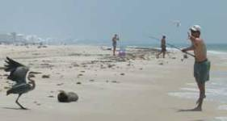

 We have many activities for you to choose from, both on site and area. Many of our visitors enjoy local fishing trips. We have a small fleet of boats that will take you out for either a half day or a full day. You can also fish in the the surf. Beware,though, of Ralph! Ralph is our resident blue heron. He knows what you fishermen have in your coolers and if you aren't careful, he'll take your catch off your hands and make a quick get-a-way
We can also arrange dolphin cruises. We have a unique approach-two boats go out side-by-side about 50 yards apart. The dolphins love it because it generates a huge wake! You'll see them jumping right between the boats
You can arrange for tickets for fishing execusions or dolphin cruises at The Club Houses desk Check out these links for area attractions that are very kid-friendly
Watch the Blue Angels practice. Call for information on dates and times.
It's a short ride over the Alabama border to see the USS Alabama at Battleship Memorial Park in Mobile Bay Alabama Hours directions and prices are posted on their Website .
.